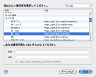

BathyScaphe の新機能
BathyScaphe の新機能
このバージョンの BathyScaphe には、２ちゃんねるのブラウズをさらに快適にするための、いくつかの新機能が含まれています。 BathyScaphe の詳細については、「BathyScaphe ヘルプ」や BathyScaphe の Web サイトを参照してください。
リンクをプレビューする
 BathyScaphe で、スレッドの本文に含まれる外部へのリンクを「プレビュー」できるようになりました。新しい「プレビューインスペクタ」の機能により、画像などをすばやく表示して確認することができます。プレビューインスペクタはプラグイン形式になっているため、他の開発者が提供するより高機能なプラグインに入れ替えることも可能です。
BathyScaphe で、スレッドの本文に含まれる外部へのリンクを「プレビュー」できるようになりました。新しい「プレビューインスペクタ」の機能により、画像などをすばやく表示して確認することができます。プレビューインスペクタはプラグイン形式になっているため、他の開発者が提供するより高機能なプラグインに入れ替えることも可能です。
より簡単になった掲示板リストの編集
掲示板リストの編集機能が完全に新しくなりました。新しい「掲示板の追加」画面では、簡単に追加したい掲示板を見つけられるようになった他、様々な改良により、より直感的に掲示板リストを操作できます。
掲示板オプション
 掲示板ごとに書き込み時の名前・メール欄をあらかじめ設定しておくことが可能になりました。また、掲示板ごとに Be ログインするかどうかも設定可能です。これらを設定するには、「掲示板」＞「掲示板オプションを表示」と選んで始めます。
掲示板ごとに書き込み時の名前・メール欄をあらかじめ設定しておくことが可能になりました。また、掲示板ごとに Be ログインするかどうかも設定可能です。これらを設定するには、「掲示板」＞「掲示板オプションを表示」と選んで始めます。
さらに強化された Spotlight プラグイン
 BathyScaphe に内蔵された Spotlight プラグインがさらに強化され、Mac OS X バージョン 10.4 以降では、BathyScaphe のログファイルをスレッドタイトルやレス数はもちろん、すべてのレスの内容から検索することができるようになりました。
BathyScaphe に内蔵された Spotlight プラグインがさらに強化され、Mac OS X バージョン 10.4 以降では、BathyScaphe のログファイルをスレッドタイトルやレス数はもちろん、すべてのレスの内容から検索することができるようになりました。